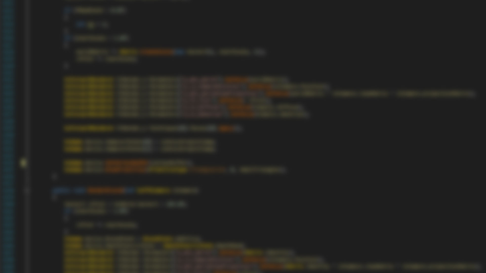
Martin Caine
I started programming on a ZX Spectrum about the age of 12 in BASIC and soon moved on to Z80 Assembly.
Over the years I've dabbled in many languages, but it wasn't until around 2008 that I really got in to
making proper games from scratch with XNA for the Xbox 360. It was really just a hobby though, alongside
my full time job in web development and email marketing, until...
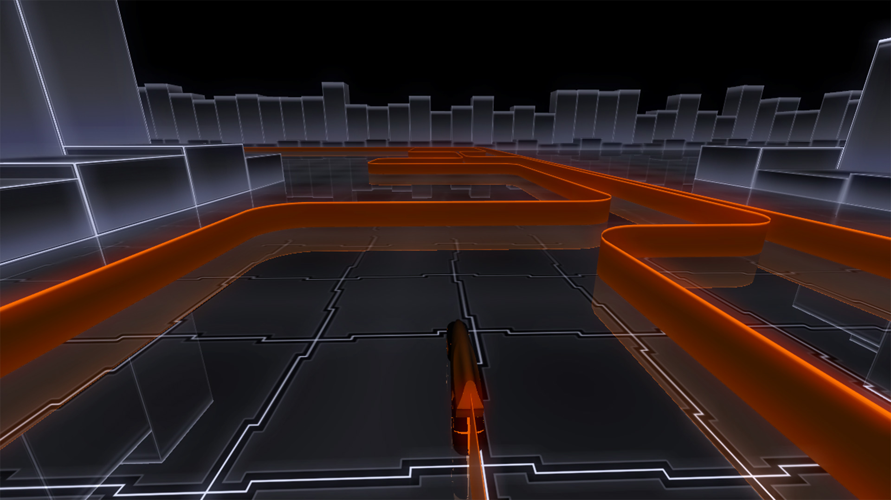
2009
XNA
A special mention for XNA, a C# game framework from Microsoft which allowed hobbyists to develop games
for Xbox 360! I learnt about XNA around 2009 and quickly started learning C# and how to use XNA. Already
having some experience with Direct 3D, I particularly enjoyed playing with graphics and effects.
I developed a number of prototype games, but sadly never released any of them. My lightcycle inspired
game Positron ultimately got me my job in the industry though...
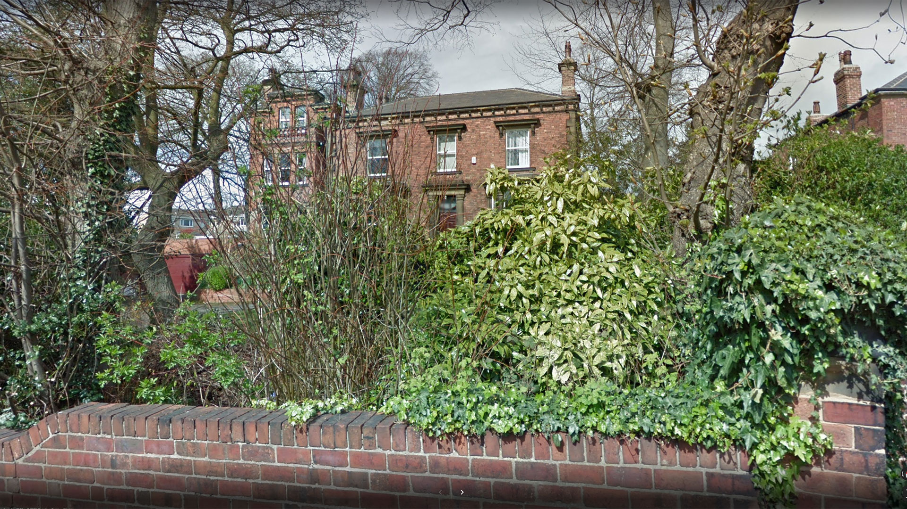
June 2012
Joined TickTock Games
I joined the studio initially to work on a C# PlayStation Mobile project (my XNA and C# experience got me the job).
Though the studio primarily worked with C++ so my experience there was beneficial also.
I actually began working on this project alongside my previous job. Once we'd hit the first milestone I was
offered a full time position. Sadly the game was cancelled before launch (and I was really proud of what we'd built).
But the timing worked out so I could jump straight on to another project...
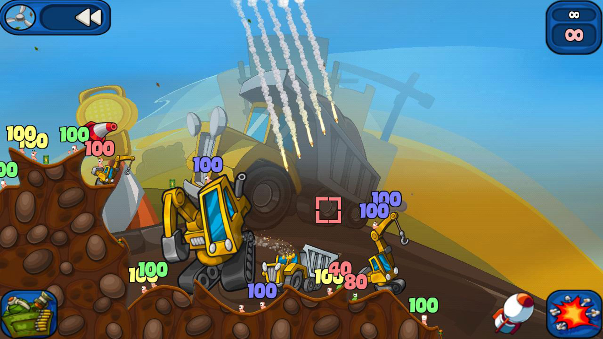
March 2013
Worms 2: Armageddon
Worked in collaboration with Team 17 to port Worms 2: Armageddon to Android (from Xbox 360 / PS3).
The game held on to the top spot on Google Play for quite a while after release!
Working together with another programmer we ported the game keeping 100% visual parity with
the console versions. I learnt a lot about Android development, and this was my first professionally released game!
Our primary contact with Team 17 was their QA, who were excellent, and pushed for the best possible experience.
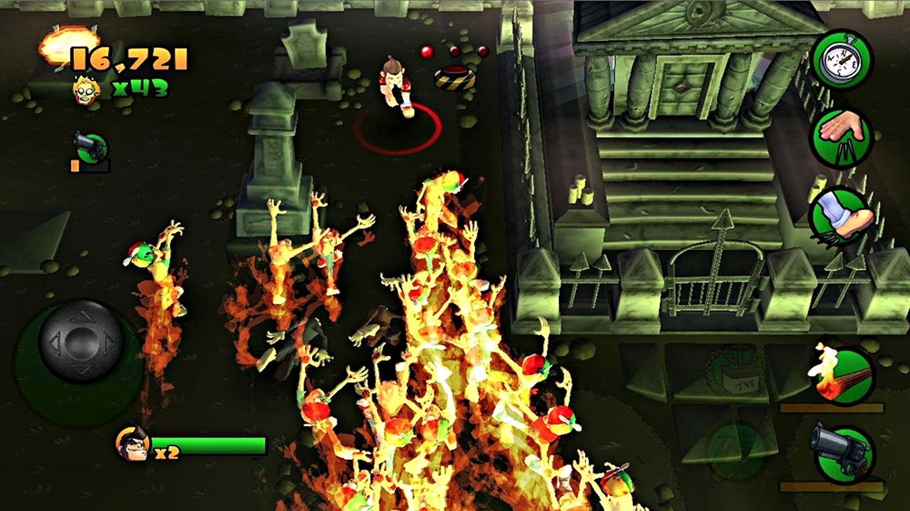
May 2013
Burn Zombie Burn
Ported Burn Zombie Burn from PS3 to Android (for NVIDIA). Initially exclusive to Tegra devices.
This was a pretty big source port bringing Phyre Engine 2 to a whole new platform it wasn't written for.
Working together with another programmer again, this game was much more challenging to get compiling,
running, and rendering on Android. A lot of optimisation work went in to this to get it running well
on the Tegra 3 chipsets we were targeting.
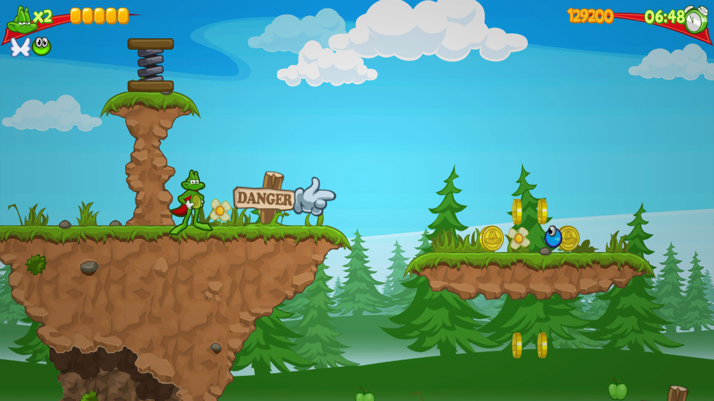
June 2014
Superfrog HD
Another collaboration with Team 17, I worked on the Steam release of Superfrog HD.
We also released the game on PS3, Vita, Android, and iPhone/iPad.
I mostly handled the Steam API integration for things like achievements and leaderboards which was new to me.
I do remember also fixing a couple of visual glitches in the PS3 and Vita versions.
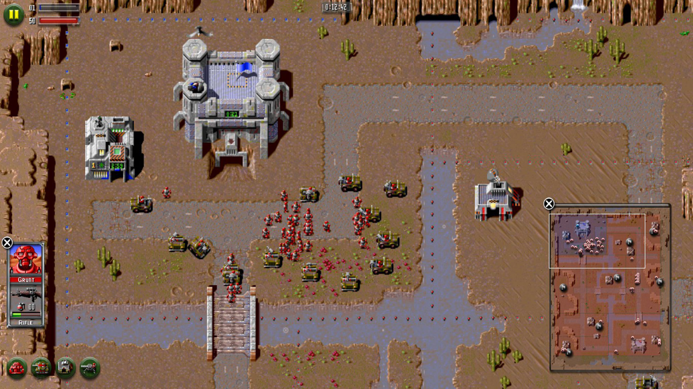
July 2014
Z
I helped bring TickTock's port of the Bitmap Brothers' Z to Steam.
The game had already been released on mobile platforms.
Using what I'd learnt from the previous project, getting Z hooked up to Steam was relatively simple.
I also fixed a funny bug in the Android version of Z which sped up loading times massively!
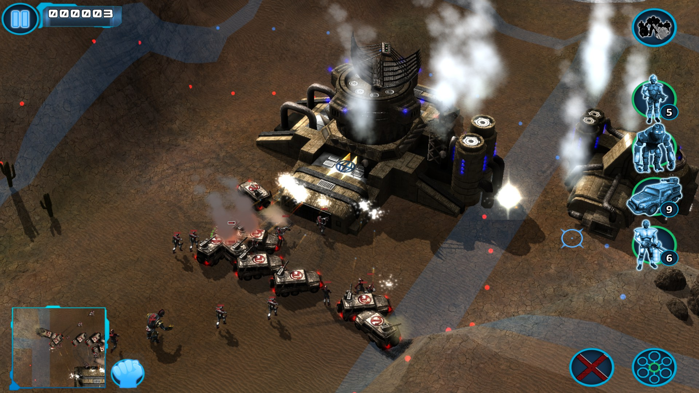
August 2014
Z Steel Soldiers
I enjoyed porting and remastering Z Steel Soldiers (the sequel to the Bitmap Brothers' Z) for Steam.
I ripped apart the existing graphics pipeline and helped write a new renderer for the game
with skinned models, normal mapping, dynamic lighting, and shadowing.
This was a fun project to work on as the game looked and played well when we released it.
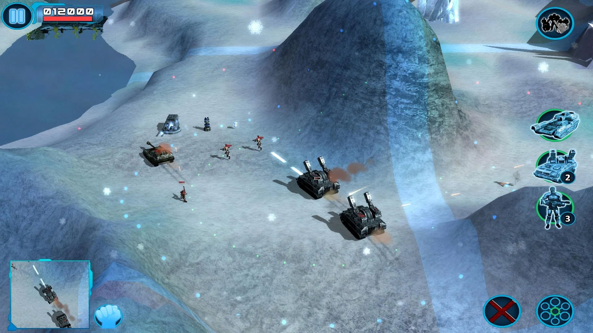
August 2014
Z Steel Soldiers
Soon after the steam release of Z Steel Soldiers we also released the game for Android.
Our Android port went quite smoothly, we had to modify some aspects of the game to
be touch friendly but the game played well on phones and tablets.
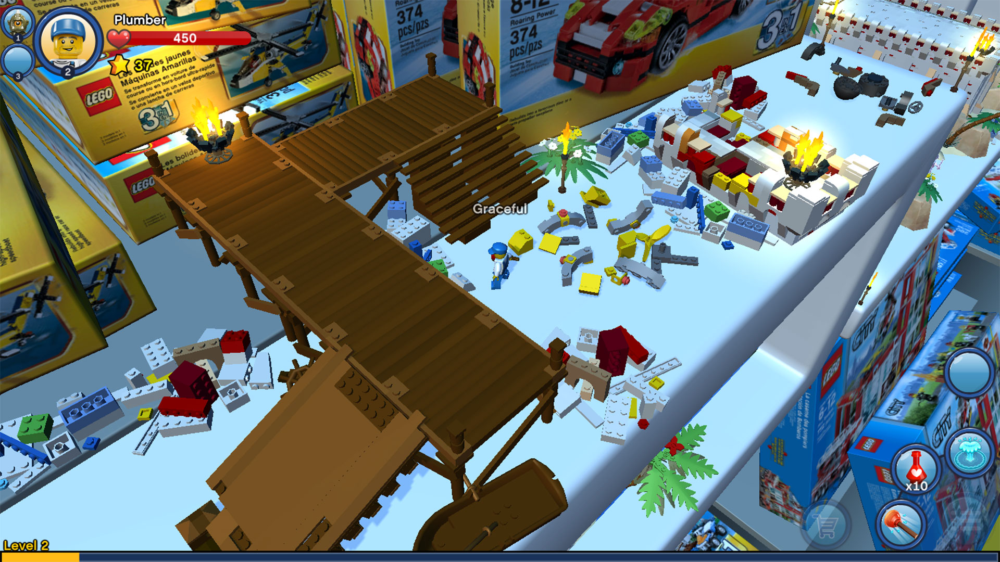
December 2014
LEGO Minifigures Online
In collaboration with Funcom, we assisted with engine and
graphics development for the PC release of LEGO Minifigures Online.
I enjoyed the time we spent working with Funcom. We were integrated in to their team
and helped co-develop engine features and graphical effects in a cross-platform way.
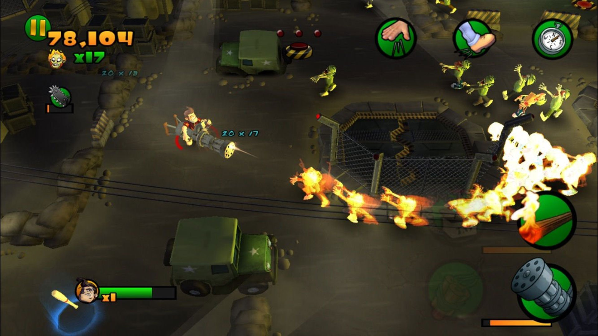
December 2014
Burn Zombie Burn
We released an iPhone/iPad port of Burn Zombie Burn (and at the same time relaxed the Tegra exclusivity on Android).
This was my first time developing for iPhone, had to learn some Objective C but we kept it light.
Some graphical issues required fixing on the iPhone GPUs too as well as implementing achievements and leaderboards.
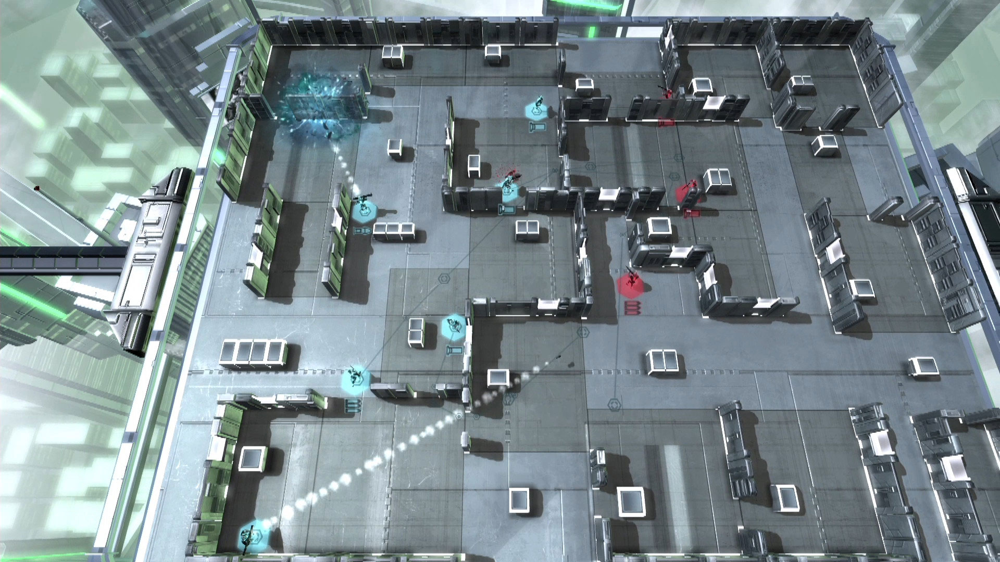
March 2015
Frozen Synapse Prime
In collaboration with Double Eleven, we assisted in porting Frozen Synapse Prime to Android
while they were developing their PS Vita and Steam versions of the game.
I mostly contributed to platform specific feature integration and some visual fixes on this port.
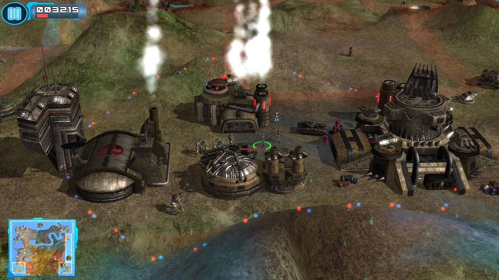
April 2015
Z Steel Soldiers
We later ported our remaster of Z Steel Soldiers to iPhone/iPad.
Using what I'd learnt on the previous iPhone port, it didn't take us long
to get Z Steel Soldiers running well and it looked awesome on iPads!
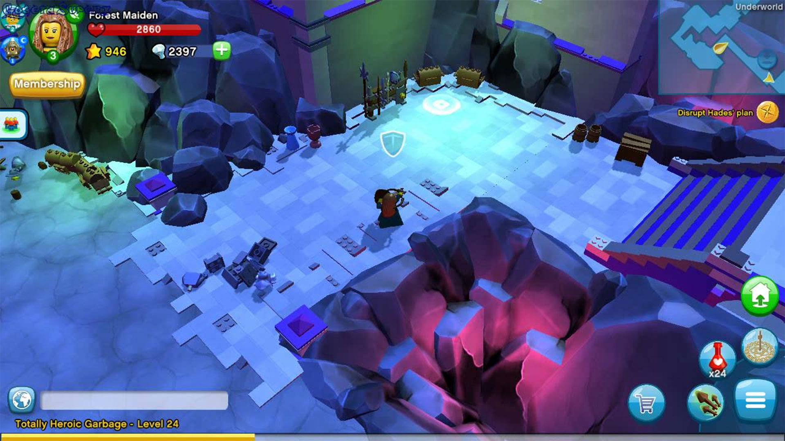
June 2015
LEGO Minifigures Online
The preliminary engine work we carried out for Funcom allowed us to bring
LEGO Minifigures Online to iPhone/iPad and Apple TV.
We had to fix numerous platform specific issues but our solid engine foundation meant the game ran well.
I think we were one of the first games to hit Apple TV too.
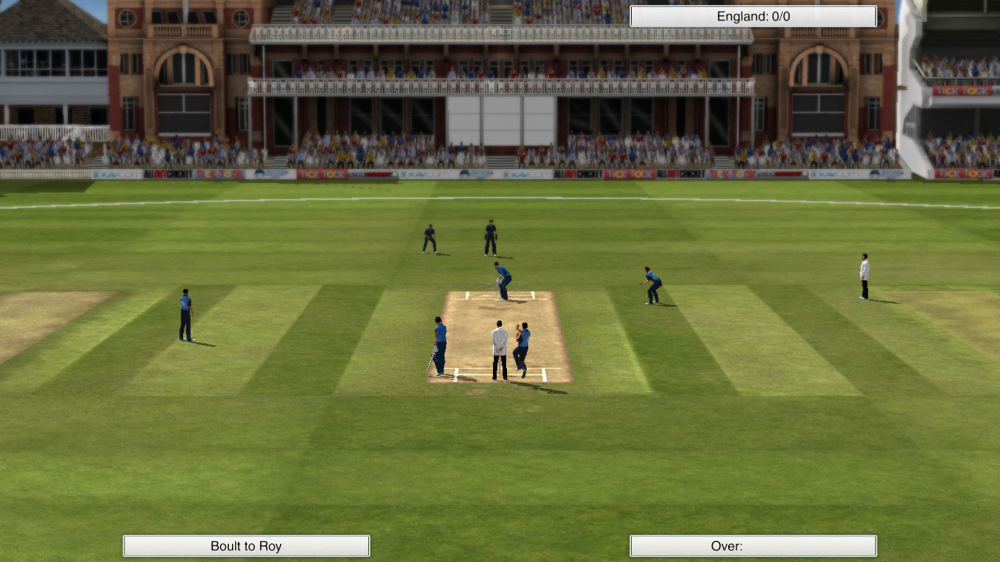
June 2015
Cricket Captain 2015
We worked with Childish Things to enhance their Cricket Captain management game for Steam.
I mostly worked on the 3D graphics for the match playback. There were some interesting challenges here as
The stadium was huge, which we wanted to look good, but also wanted nice player lighting and shadows.
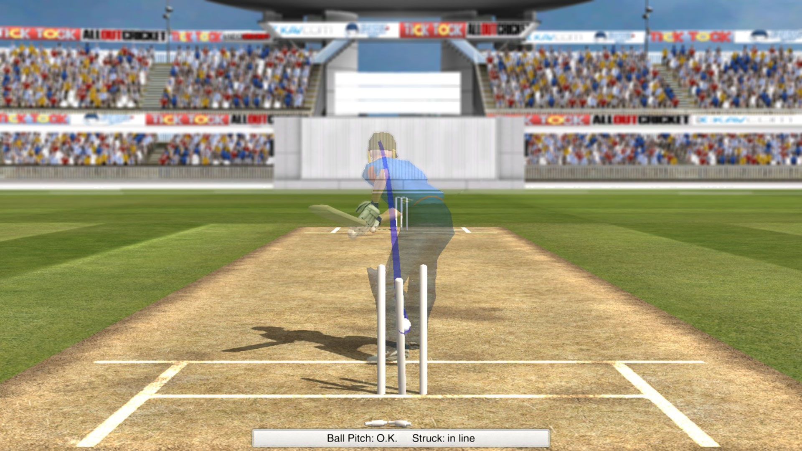
June 2015
Cricket Captain 2015
We released Cricket Captain 2015 on Android along side the Steam release.
The graphics code did require some changes for Android devices.
I mostly had to fix lighting and shadowing issues in the match rendering for Android.
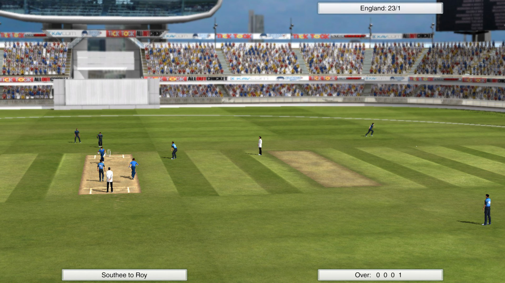
June 2015
Cricket Captain 2015
As with Android, we released Cricket Captain 2015 on iPhone/iPad at the
same time, and it too required some slight graphical changes..
As with the Android release, ensuring we kept parity with the Steam version required some graphical tweaks.
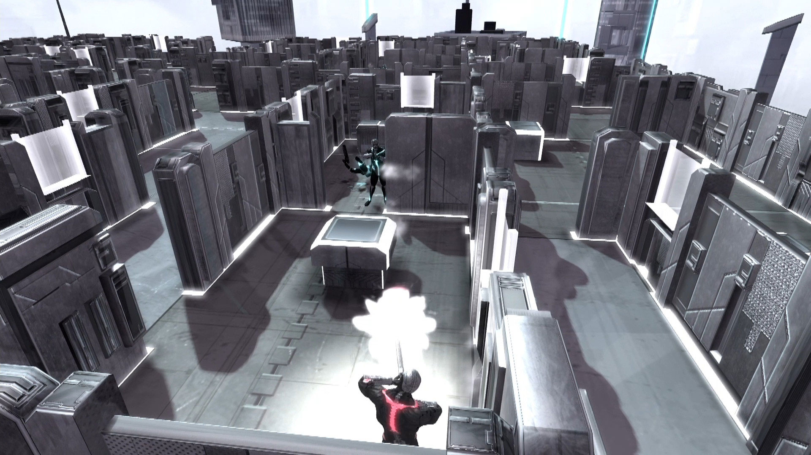
August 2015
Frozen Synapse Prime
Following our Android port of Frozen Synapse Prime, we assisted Double Eleven in
porting the game to iPhone/iPad too.
I fixed some graphical issues that were present on iPhone and helped implement platform specific features.
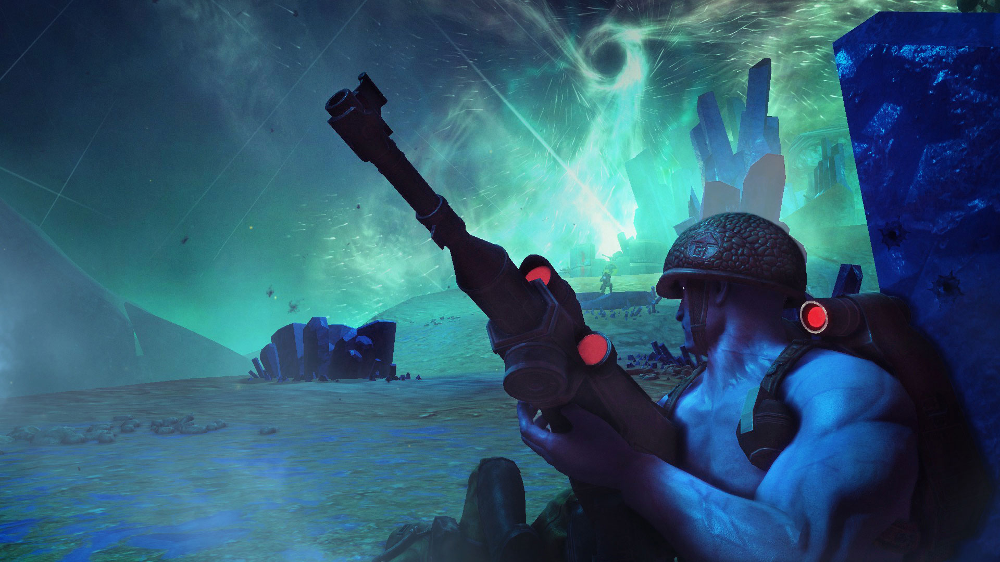
October 2017
Rogue Trooper Redux
Porting and remastering Rebellion's 2006 game Rogue Trooper for PC was TickTock's most ambitious project to date.
Working as an external partner with Rebellion, we handled full development, with all art outsourced by Rebellion.
Initially, it was a challenge to take the 2006 source code for the game and get it running on PC!
I was given a lot of freedom in how I rewrote the graphics engine for full real-time deferred lighting
and I'm really quite proud of what we achieved with the game's visuals.
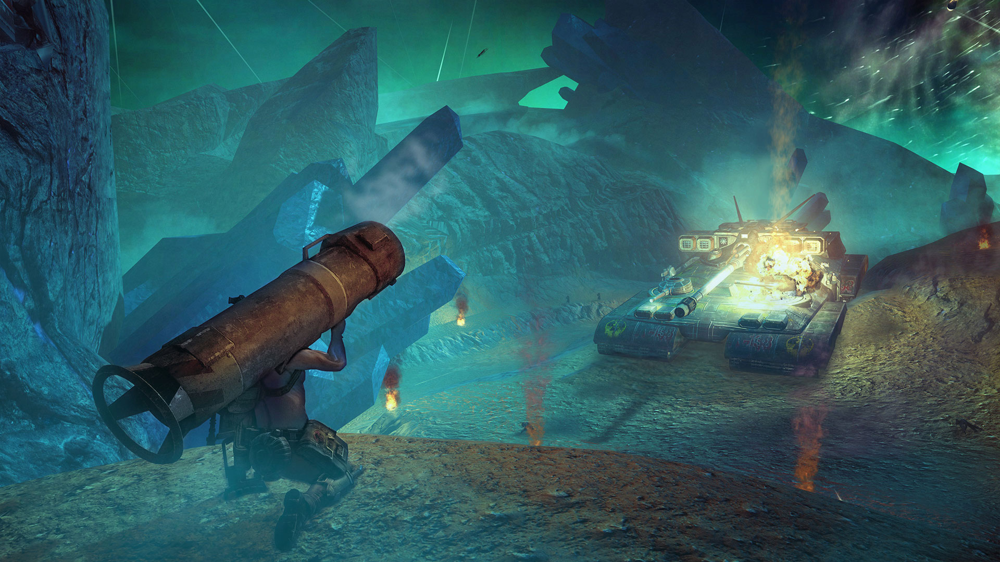
October 2017
Rogue Trooper Redux
The release of Rogue Trooper: Redux also marked our debut on Xbox One.
We had previously assisted on some Xbox One projects but this was our first release.
I wrote the PC renderer with D3D11 which meant bringing the game to Xbox One was fairly straightforward.
I also handled implementation of a number of platform specific features for Xbox One.
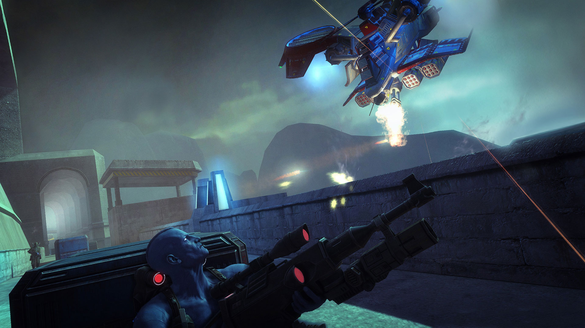
October 2017
Rogue Trooper Redux
Bringing Rogue Trooper: Redux to PS4 was also a first for us.
Bringing the graphical changes over to the platform was a challenge but we did a great job.
I wasn't very heavily involved in the specifics of the PS4 GNM renderer but I helped
with some fundamental rewrites which helped make the renderer more platform agnostic.
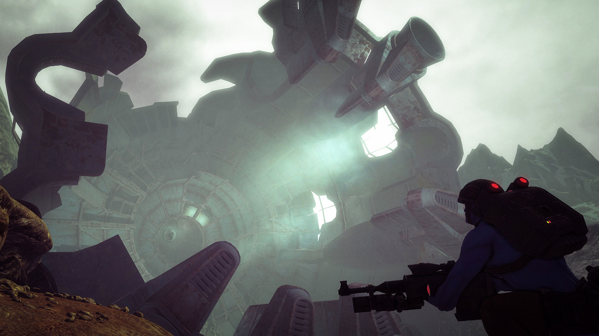
October 2017
Rogue Trooper Redux
We were amongst some of the first independent developers to gain access to Nintendo Switch
development hardware. We learnt a lot about the platform during the porting process.
Our previous work with NVIDIA on their Tegra chipset helped massively too.
As with PS4, I wasn't heavily involved in implementing the Switch NVN renderer.
Much of what I'd already laid out in the engine foundation made the port easier to manage.
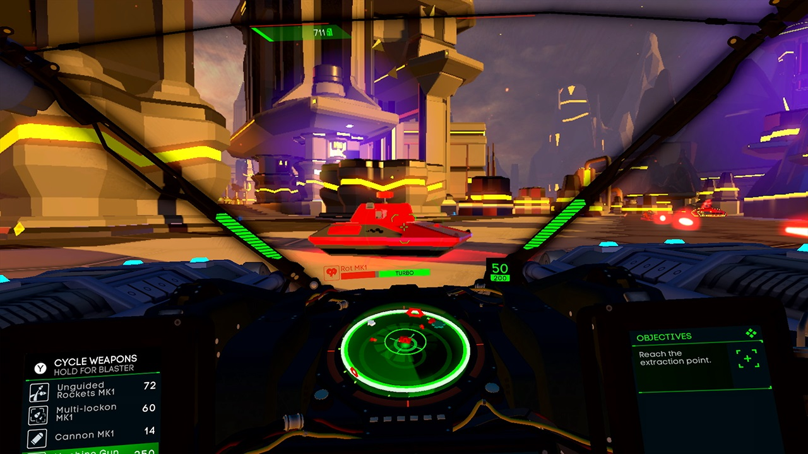
November 2018
Battlezone
Rebellion offered us (a lot) more work, and our next released game for them was a port of
Battlezone Gold for Nintendo Switch. Using a lot of code we wrote for Rogue Trooper: Redux,
we also got to see a much more recent version of their engine.
I wasn't much involved in Battlezone but I did fix a couple of bugs and assist during submission.
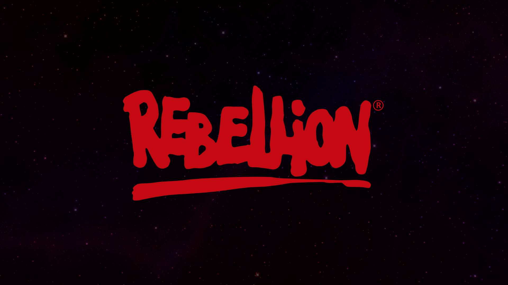
January 2019
Rebellion acquires TickTock Games
It was announced in early 2019 that Rebellion had acquired our studio outright. They were so happy
with the work we had been doing for them, and wanted us to be partners in all future projects.
We already had titles in development for Rebellion at the time, so very little changed internally.
With our new name: Rebellion North; we continue to maintain our existing studio culture and our approach
to projects remains the same. We are a tight-nit group and I'm proud of our friendly studio atmosphere.
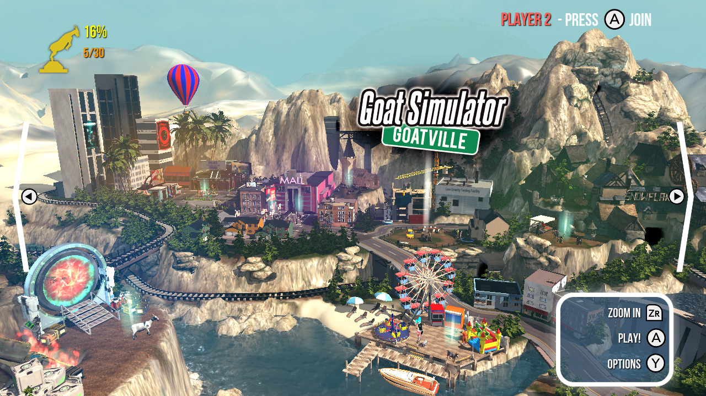
February 2019
Goat Simulator
Our experience developing games for the Nintendo Switch caught the eye of our old friends at Double Eleven
who were in charge of porting Goat Simulator (in 2018). We assisted them by porting the game (and UE3) to
Switch. This was our final non-Rebellion release, as we had been working on this project pre-acquisition.
Together with another programmer we managed to get UE3 building for Switch. After that point
I was heavily involved in getting the actual game running well and fixing a number of issues
which usually came down to the way we'd had to re-implement some engine code to run on Switch.
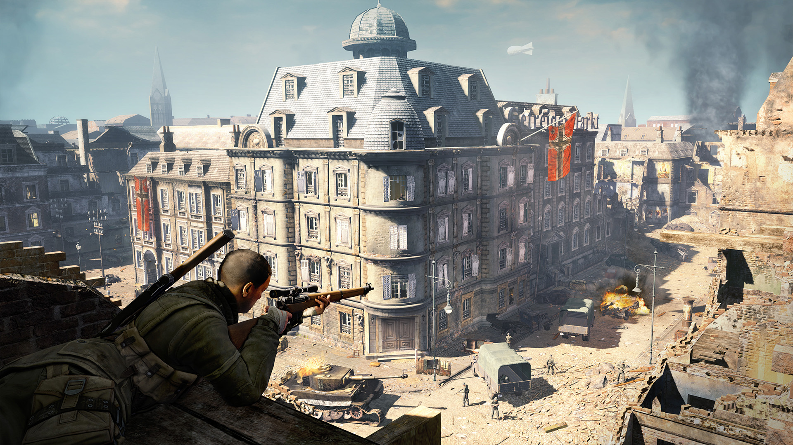
May 2019
Sniper Elite V2: Remastered
Work began on Sniper Elite V2: Remastered well before the acquisition. We used everything we'd
learnt from earlier releases to deliver a high quality reboot for PC.
I was involved in getting the game running and getting a graphics pipeline working so we could
remaster the game's assets. I also implemented much of the PhotoMode functionality.
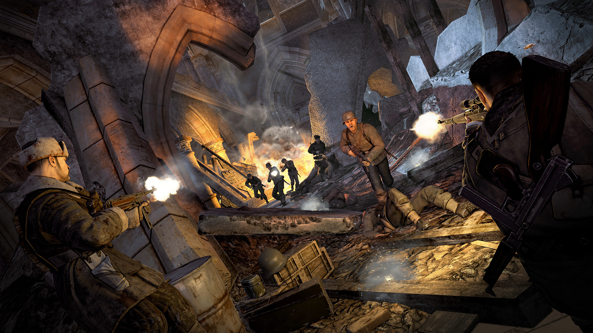
May 2019
Sniper Elite V2: Remastered
Our fourth release on the Nintendo Switch, Sniper Elite V2: Remastered pushed the hardware
even further than before. We got a lot of positive feedback from players on Switch.
I got to play with some graphics code for Switch on this project and fixed some platform specific issues.
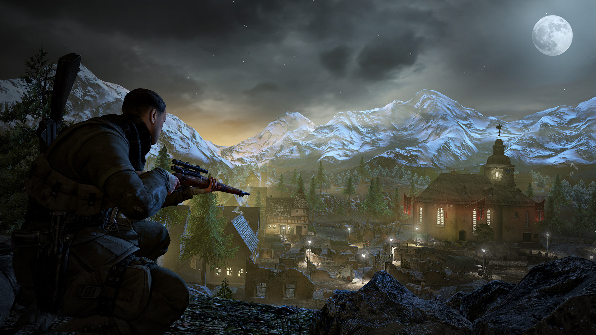
May 2019
Sniper Elite V2: Remastered
We also brought Sniper Elite V2: Remastered to the Xbox One. Using the power of the system to deliver
enhancements and improved visuals not seen in the original Xbox 360 version of the game.
I helped bring across our Xbox specific code from Rogue Trooper which gave us a
head start on getting the game ready for release on Xbox One.
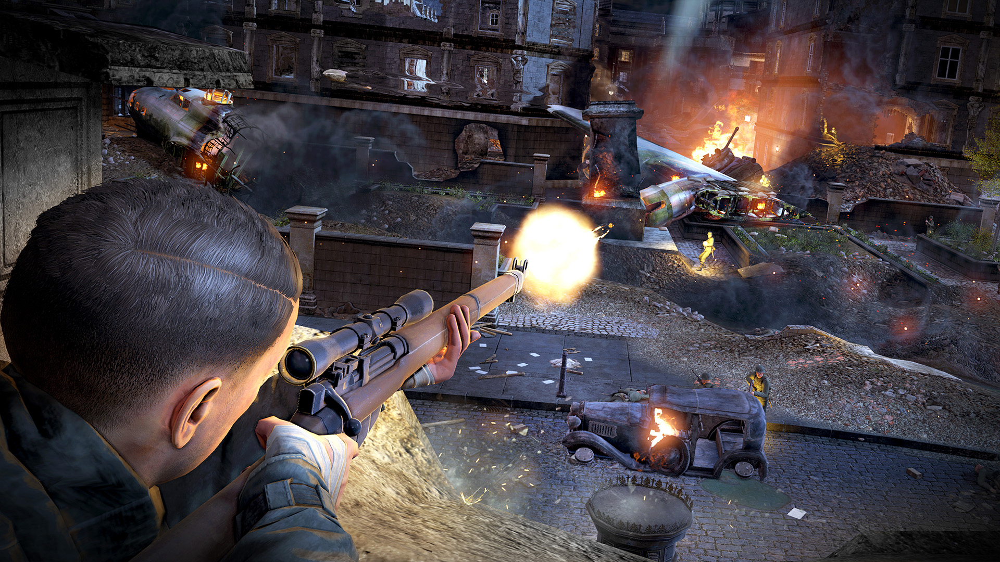
May 2019
Sniper Elite V2: Remastered
As with the Xbox One release, our PS4 release of Sniper Elite V2: Remastered improved
upon the previous gen version of the game which was released on PS3.
I got to learn more about the PS4 GNM renderer for this port and fixed some issues
that arose due to differences in the way the PC rendered compared to PS4.
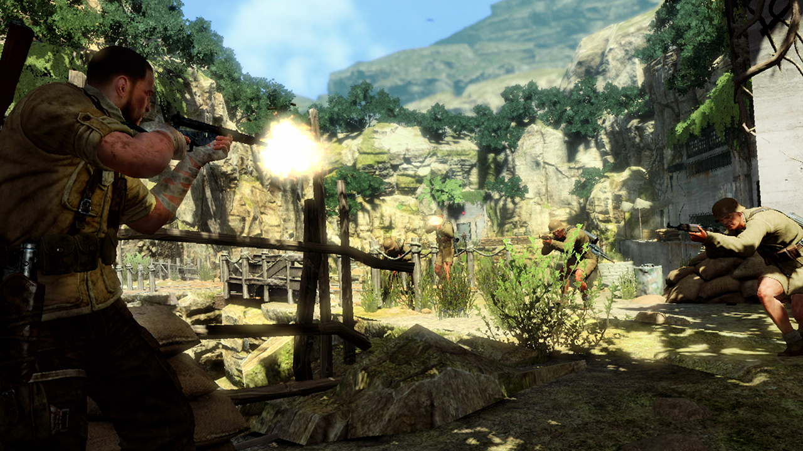
October 2019
Sniper Elite 3: Ultimate Edition
Another Switch release was hot on the heels of our last, this time with Sniper Elite 3: Ultimate Edition.
This was a much more challenging port as this game originally saw a release on current gen consoles.
I worked on rendering optimisations in particular shaders and techniques on this port.
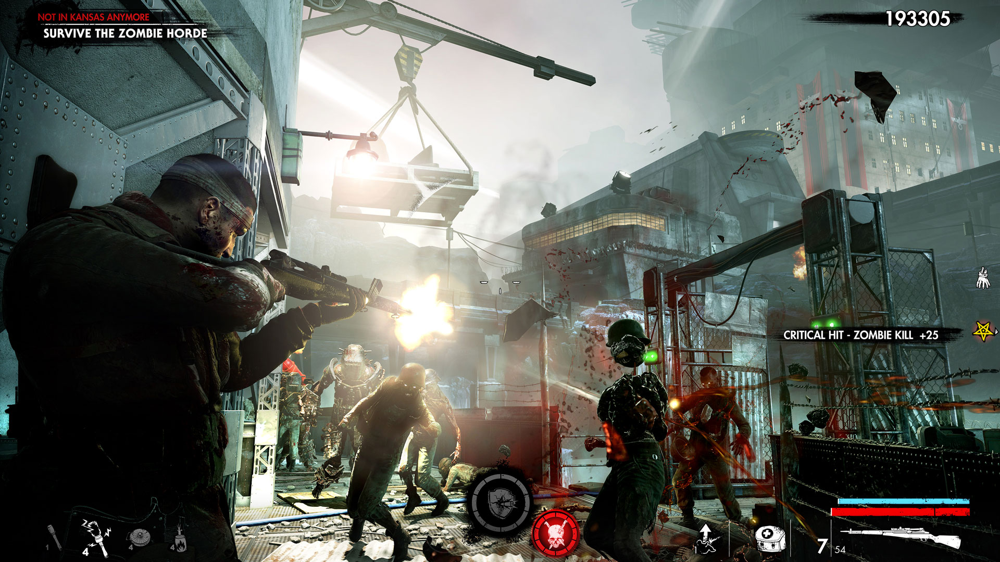
February 2020
Zombie Army 4: Dead War
Alongside our work remastering and porting Rebellion's existing titles I was also assisting
the core engine team with rendering technology and performance optimization.
I helped bring specific rendering optimisations to the console versions of this release.
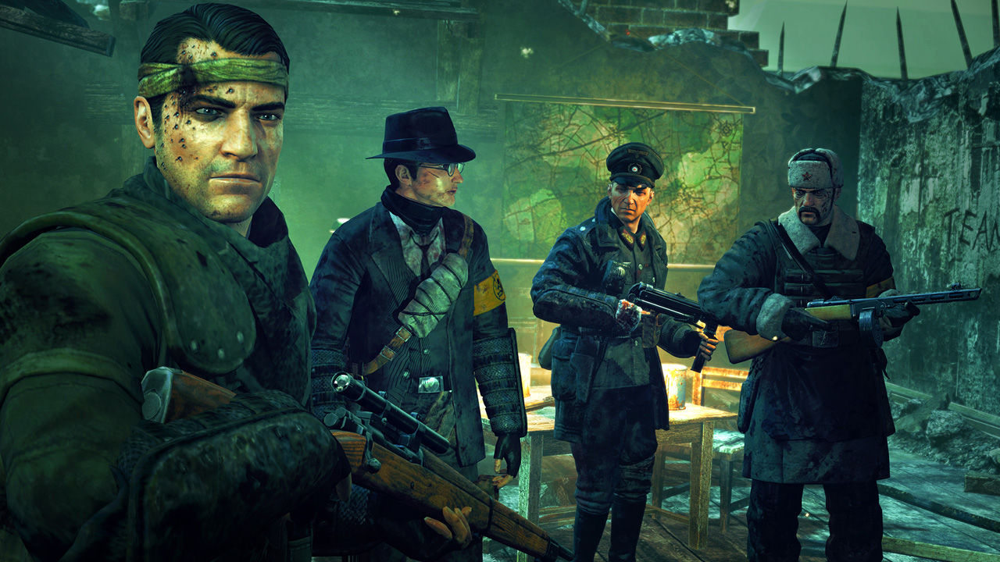
March 2020
Zombie Army Trilogy
Moving on from our excellent work with Sniper Elite 3 on Nintendo Switch, we went even further with
performance optimization for Zombie Army Trilogy, which gained quite favourable reviews on release!
I was only involved in bug fixing and a bit of optimisation on this release.
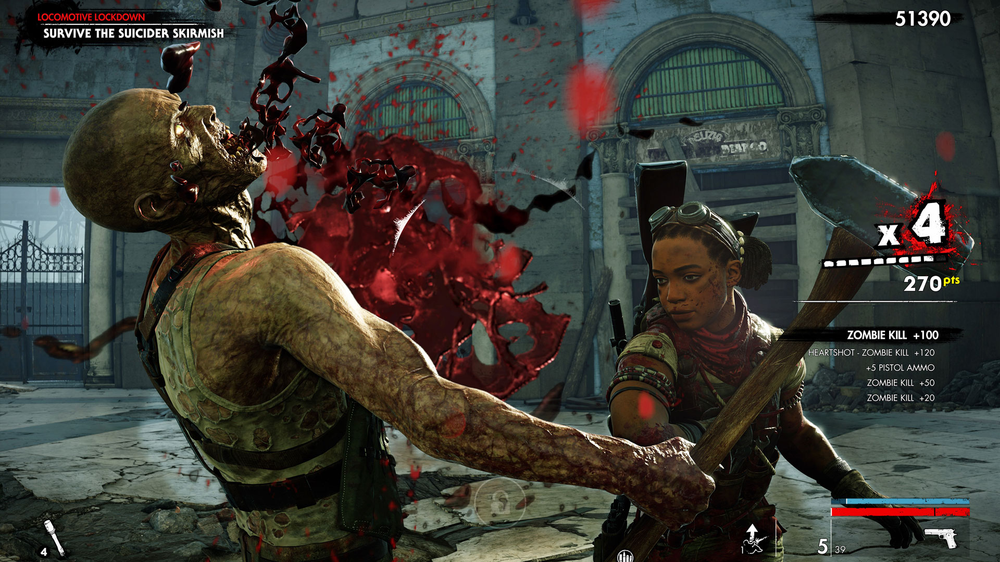
May 2020
Zombie Army 4: Dead War
Continuing our tradition of porting games to new platforms while maintaining the highest quality levels, we
brought Zombie Army 4 to Stadia. I've been pleasantly surprised by the gameplay experience on the platform.
I helped get our Vulkan renderer running on stadia and fixed a number of platform specific issues.
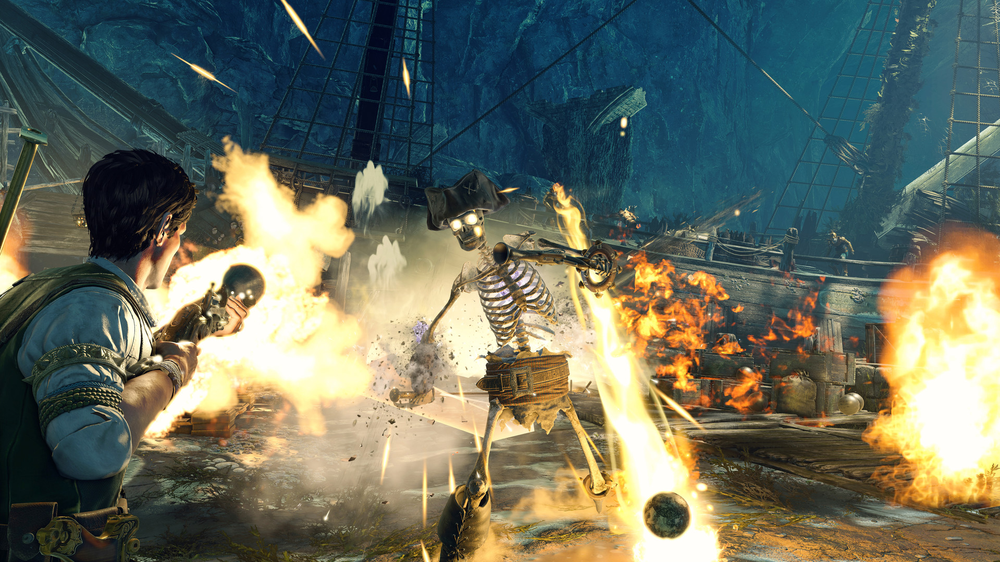
August 2020
Strange Brigade
Using what we'd learnt from porting Zombie Army 4 to Stadia, we next brought Strange Brigade to the
streaming platform. The game played great in co-op too and the graphics settings were maxed out.
As with the previous release, I fixed a number of platform specific issues with the game and rendering.
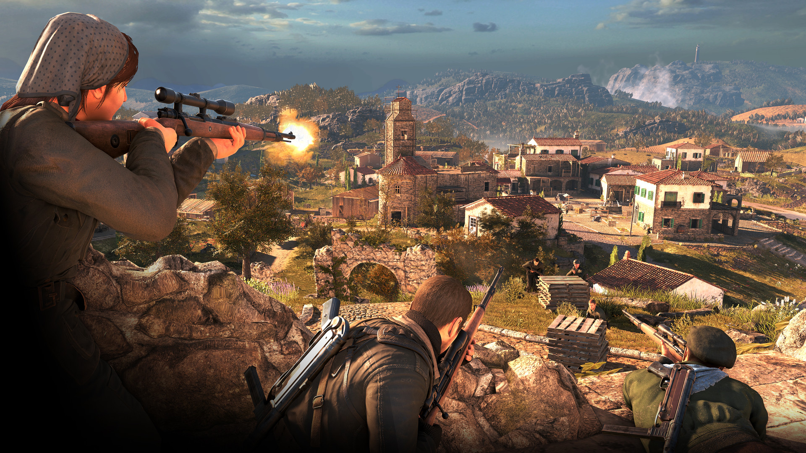
November 2020
Sniper Elite 4
We next brought Rebellion's flagship product to Stadia. Porting Sniper Elite 4 to the platform
brought it's own challenges but it was great to see the game on there and it was popular on release too.
I mostly worked on optimisation and bug fixing for this release.
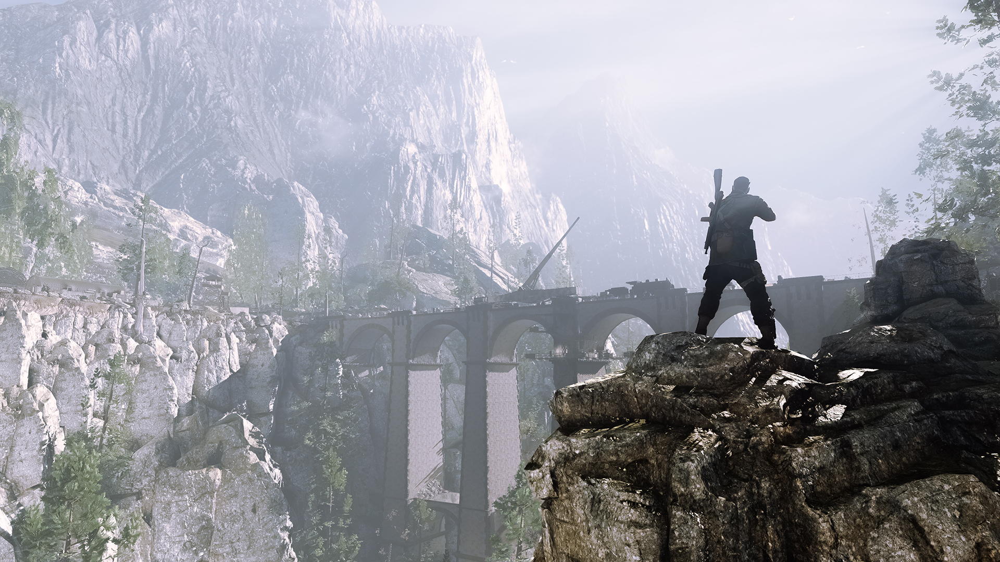
November 2020
Sniper Elite 4
Always looking to challenge ourselves, our next Switch release was our most ambitious port yet.
We brought Sniper Elite 4 (an Xbox One and PS4 game) to Nintendo Switch. A lot of complex optimisation work
was required to get this one running nice and fast.
I worked on a lot of core engine optimisation on this release to get the game running well across
all CPU cores on the Nintendo Switch. I also worked on graphics optimisation for the platform.
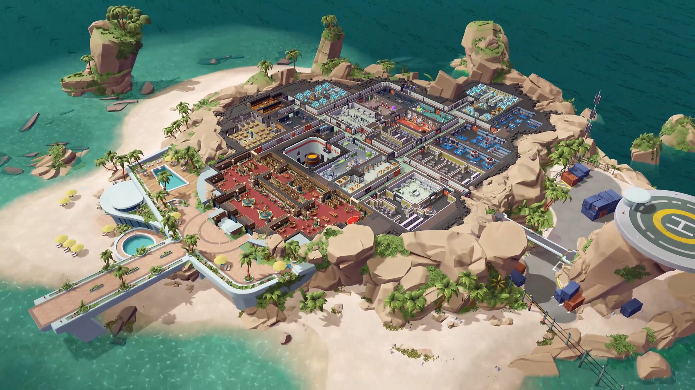
March 2021
Evil Genius 2
A full blown sequel to Elixir's 2004 game Evil Genius. This was something quite different for
Rebellion's Asura engine, and the game was very well received on launch.
I was lucky enough to be involved in this project shortly before it was released.
I mostly worked on a couple of core gameplay systems, and the PhotoMode integration.
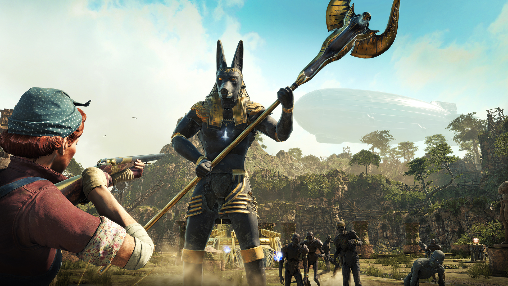
June 2021
Strange Brigade
Stepping up from our work on Sniper Elite 4 for Switch, we applied all our optimisations
to Strange Brigade, but battling hordes of enemies in co-op meant we had to take our
optimisations to the next level with this release!
I only worked briefly on this project and helped fix some graphical issues and some gameplay bugs.
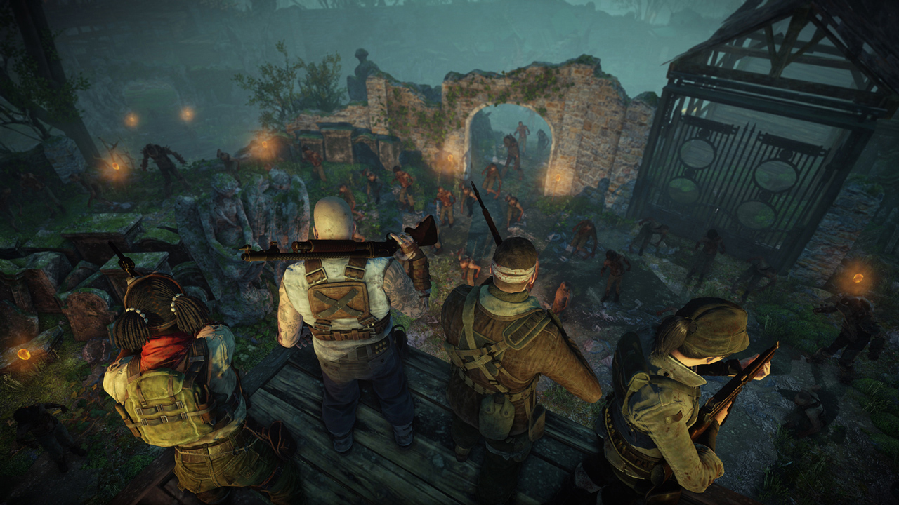
June 2022
Zombie Army 4: Dead War
It's almost unbelievable to think we could not only get this game running well on the Nintendo Switch,
but that we also managed to squeeze it down on to a physical cartridge for release too!
I was barely involved in this port, but much of what I'd put in to our previous releases made this possible :)
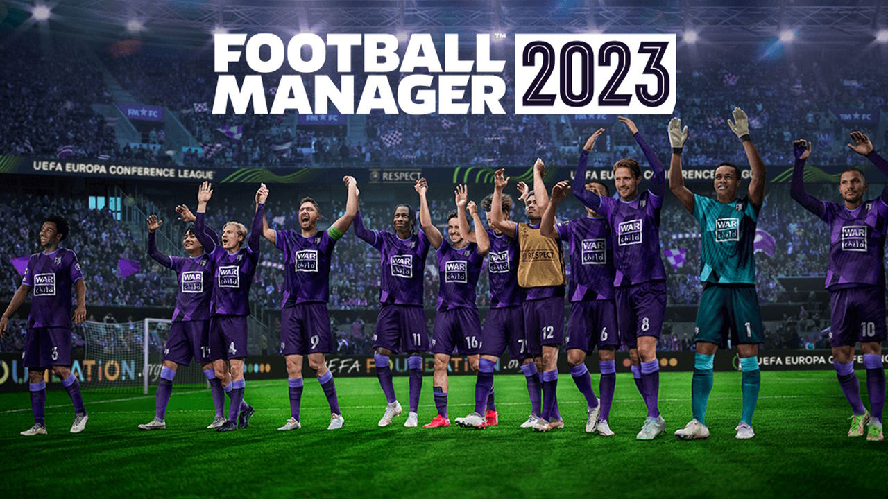
February 2023
Football Manager 2023
Back in to the land of co-development, working with Sports Interactive to bring their latest game to PS5.
Through our contacts and proven track record of delivering top class ports for all systems, Sports Interactive
chose to have us bring their engine to the PlayStation 5. This was an interesting port and despite having some
prior experience with PS5 (and a lot of experience on PS4) there was a lot to learn, and how best to approach
this port to bring the full Football Manager experience to PlayStation 5.
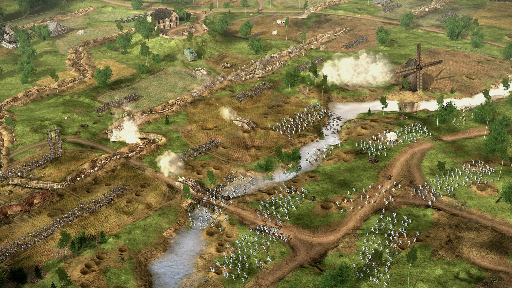
August 2023
The Great War: Western Front
Gaining more experience of D3D12 while porting Petroglyph's engine to the render API.
Worked as part of a small team, adding d3D12 support to Petroglyph's in-house engine.
The Great War: Western Front was Petroglyph's latest Steam game which was gaining traction.
This was a nice project to work on with space for learning optimisation tricks for D3D12 as
we worked on porting the renderer, to gain absolute render parity with their existing D3D11 build.
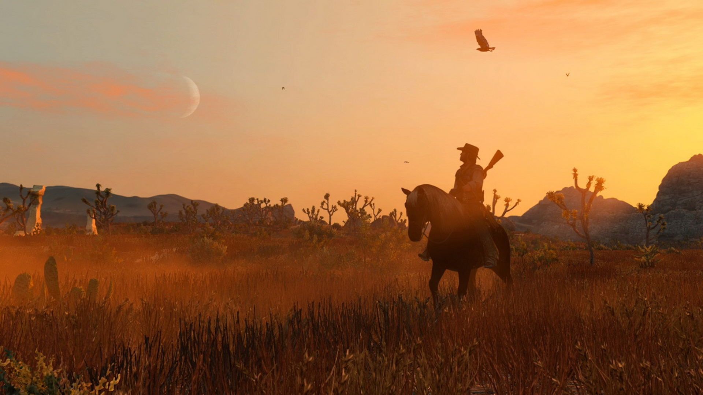
August 2023
Red Dead Redemption
Bringing an Xbox 360 era classic to modern platforms, in collaboration with Double Eleven and Rockstar.
Collaborated with Double Eleven in helping port and optimise the original Red Dead Redemption to run on the
Nintendo Switch. We used all that we had learnt from our many Switch releases to make the most of the
hand-held's CPU and GPU, and delivered an excellent port of the game which was well recieved.
We also worked a little on the PlayStation 4 release of the game too.
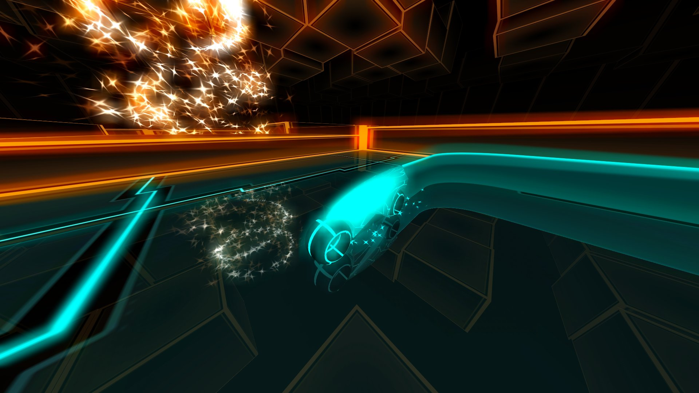
2024
Positron
That little XNA game that got me a job back in 2012? It's out now, in Steam Early Access!
It's been a long time coming, and there's more to do, but it's nice that people are now able to play it on Steam.
Over the years I've used Positron as a testbed to learn to develop for new platforms and learn new graphics
techniques. I ported the core game from XNA to C++ and wrote my own lightweight engine. I ported that engine to
run on every platform I could get access to, including Wii-U, PS Vita, PS3, and all the modern platforms. I even
had it running well on a Raspberry Pi a while ago. I'm aiming for a Q4 2025 full release on Steam, consoles, and mobile :)
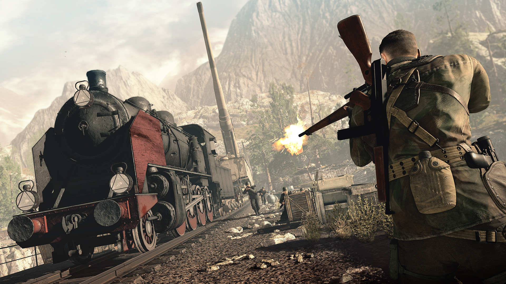
2025
Sniper Elite 4
Porting Sniper Elite 4, again?! This time bringing the game to Apple iPhone and Mac.
With Apple pushing the capabilities of their latest phones and devices,
particularly with respects to gaming, it made sense for us to get Sniper Elite on there.